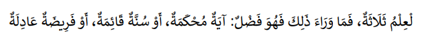

Dasar-Dasar Ilmu Waris
A. Definisi llmu Waris Islam
Sebelum membagi harta waris terlebih dahulu perlu
dimengerti llmu waris Islam (AI-Mawarits). AI-Mawarits
adalah masalah-masalah pembagian harta warisan, atau
disebut juga sebagai ilmu AI-Faraidh. Sedangkan secara
terminologis (Pengertian), ilmu AI-Mawarits memiliki
beberapa definisi, diantaranya:
1. Kaidah-kaidah fiqih dan cara menghitung untuk
mengetahui bagian setiap ahli waris dari harta
peninggalan.
2. llmu yang digunakan untuk mengetahui ahli waris yang
dapat mewarisi dan yang tidak dapat mewarisi serta
mengetahui kadar bagian setiap ahli waris.
Dengan demikian, llmu AI-Mawarits mencakup tiga unsur penting di dalamnya
1. Pengetahuan tentang kerabat-kerabat yang menjadi ahli
waris;
2. Pengetahuan tentang bagian setiap ahli waris;
3. Pengetahuan tentang cara menghitung yang dapat
berhubungan dengan pembagian harta warisan.
Sedangkan objek kajian ilmu ini adalah At-Tirkah “harta peninggalan” si mayit yang bertujuan untuk memenuhi hak para “yang berhak menerimanya”.
B. Sumber Hukum Waris Islam
Sumber-sumber hukum yang digunakan dalam llmu
AI-Mawarits adalah AI-Qur'an, Hadits Rasulullah dan
ljma' Shahabat. ljtihad atau qiyas di dalam llmu
AI-Mawarits tidak mempunyai ruang gerak sedikitpun,
kecuali jika ia sudah menjadi ijma AI-'Ummah
(kesepakatan seluruh mujtahid dalam suatu masalah pada
suatu masa tertentu).
1. Sumber AI-Qur'an:
QS. An-Nisa ayat 11
Terjemahan:
Allah mensyari’atkan bagimu tentang (pembagian pusaka
untuk) anak-anakmu. Yaitu: bahagian seorang anak
lelaki sama dengan bagahian dua orang anak perempuan;
dan jika anak itu semuanya perempuan lebih dari dua,
maka bagi mereka dua pertiga dari harta yang
ditinggalkan; jika anak perempuan itu seorang saja,
maka ia memperoleh separo harta. Dan untuk dua orang
ibu-bapa, bagi masing-masingnya seperenam dari harta
yang ditinggalkan, jika yang meninggal itu mempunyai
anak; jika orang yang meninggal tidak mempunyai anak
dan ia diwarisi oleh ibu-bapanya (saja), maka ibunya
mendapat sepertiga; jika yang meninggal itu mempunyai
beberapa saudara, maka ibunya mendapat seperenam.
(Pembagian-pembagian tersebut di atas) sesudah
dipenuhi wasiat yang ia buat atau (dan) sesudah
dibayar hutangnya. (Tentang) orang tuamu dan
anak-anakmu, kamu tidak mengetahui siapa di antara
mereka yang lebih dekat (banyak) manfaatnya bagimu.
Ini adalah ketetapan dari Allah. Sesungguhnya Allah
Maha Mengetahui lagi Maha Bijaksana.
QS. An-Nisa ayat 12
Terjemahan:
Dan bagimu (suami-suami) seperdua dari harta yang
ditinggalkan oleh isteri-isterimu, jika mereka tidak
mempunyai anak. Jika isteri-isterimu itu mempunyai
anak, maka kamu mendapat seperempat dari harta yang
ditinggalkannya sesudah dipenuhi wasiat yang mereka
buat atau (dan) seduah dibayar hutangnya. Para isteri
memperoleh seperempat harta yang kamu tinggalkan jika
kamu tidak mempunyai anak. Jika kamu mempunyai anak,
maka para isteri memperoleh seperdelapan dari harta
yang kamu tinggalkan sesudah dipenuhi wasiat yang kamu
buat atau (dan) sesudah dibayar hutang-hutangmu. Jika
seseorang mati, baik laki-laki maupun perempuan yang
tidak meninggalkan ayah dan tidak meninggalkan anak,
tetapi mempunyai seorang saudara laki-laki (seibu
saja) atau seorang saudara perempuan (seibu saja),
maka bagi masing-masing dari kedua jenis saudara itu
seperenam harta. Tetapi jika saudara-saudara seibu itu
lebih dari seorang, maka mereka bersekutu dalam yang
sepertiga itu, sesudah dipenuhi wasiat yang dibuat
olehnya atau sesudah dibayar hutangnya dengan tidak
memberi mudharat (kepada ahli waris). (Allah
menetapkan yang demikian itu sebagai) syari’at yang
benar-benar dari Allah, dan Allah Maha Mengetahui lagi
Maha Penyantun.
QS. An-Nisa ayat 176
Terjemahan:
Mereka meminta fatwa kepadamu (tentang kalalah).
Katakanlah: “Allah memberi fatwa kepadamu tentang
kalalah (yaitu): jika seorang meninggal dunia, dan ia
tidak mempunyai anak dan mempunyai saudara perempuan,
maka bagi saudaranya yang perempuan itu seperdua dari
harta yang ditinggalkannya, dan saudaranya yang
laki-laki mempusakai (seluruh harta saudara
perempuan), jika ia tidak mempunyai anak; tetapi jika
saudara perempuan itu dua orang, maka bagi keduanya
dua pertiga dari harta yang ditinggalkan oleh yang
meninggal. Dan jika mereka (ahli waris itu terdiri
dari) saudara-saudara laki dan perempuan, maka
bahagian seorang saudara laki-laki sebanyak bahagian
dua orang saudara perempuan. Allah menerangkan (hukum
ini) kepadamu, supaya kamu tidak sesat. Dan Allah Maha
Mengetahui segala sesuatu.
2. Sumber Hadits
HR. Bukhari dan Muslim
Terjemahan:
Dari Ibnu ‘Abbas radhiyallahu ‘anhuma, ia berkata
bahwa Rasulullah shallallahu ‘alaihi wa sallam
bersabda, “Berikan bagian warisan kepada ahli
warisnya, selebihnya adalah milik laki-laki yang
paling dekat dengan mayit.” (HR. Bukhari, no. 6746 dan
Muslim, no. 1615)
HR. Ibnu Majah
Terjemahan:
“Wahai Abu Hurairah, belajarlah ilmu faraidh dan
ajarkanlah, karena sesungguhnya ia adalah setengah
dari ilmu. Dan ilmu itu akan dilupakan dan dia adalah
ilmu yang pertama kali dicabut dari umatku” (HR. Ibnu
Majah no. 2719)
HR. Abu Dawud

Terjemahan:
“Ilmu itu ada tiga, sedangkan selebihnya hanyalah
keutamaan, yaitu: ayat muhkamat, sunnah yang tegak,
dan faraidh yang adil.” (HR. Abu Dawud no. 2885 dan
Ibnu Majah no. 54)